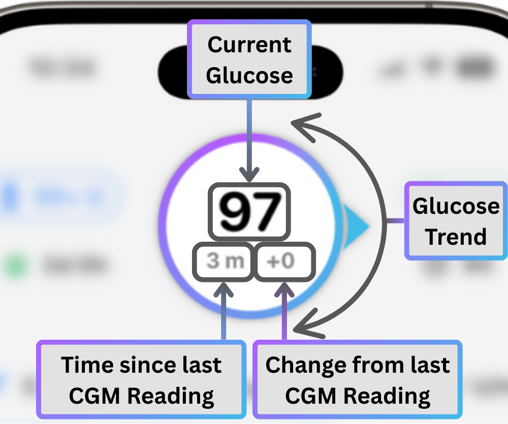
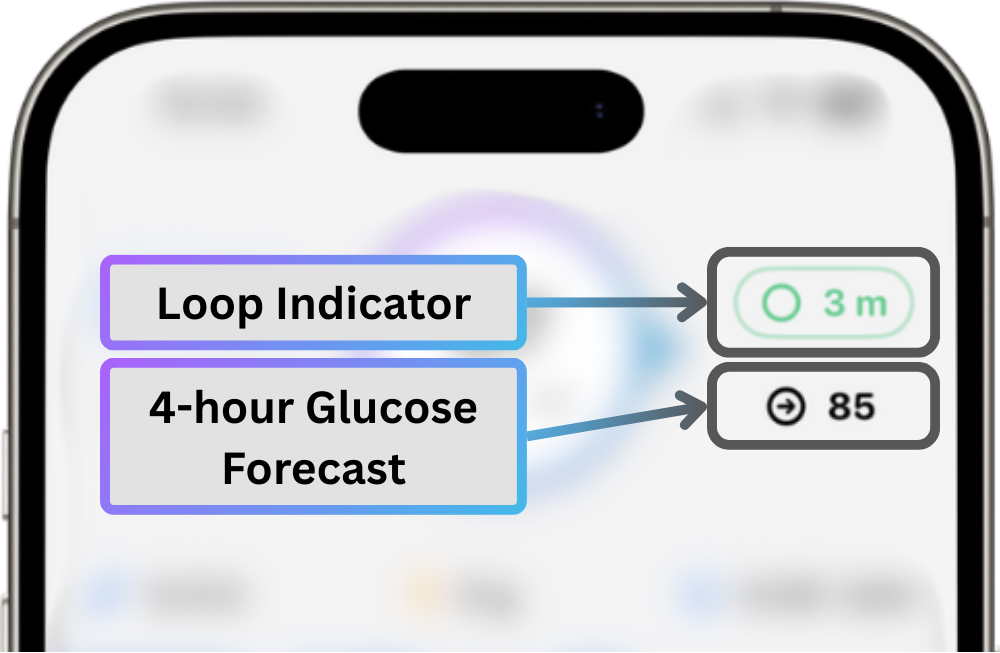
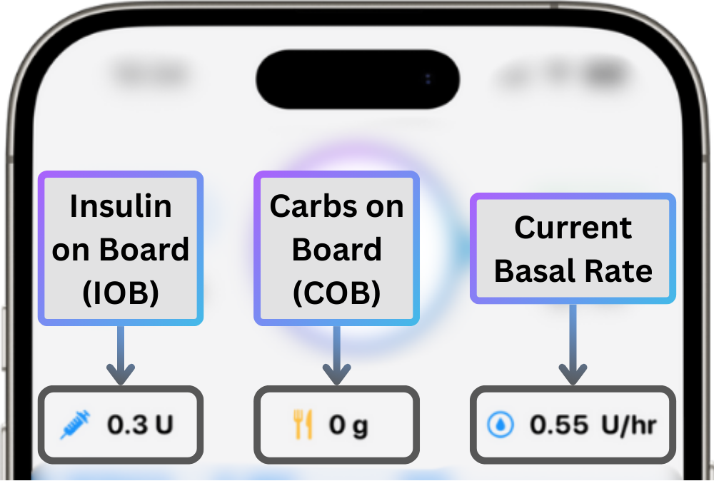

Here you will find a centered bobble containing your current glucose reading, the time since the last glucose reading, the change in glucose from the previous reading, and an arrow that indicates the trending direction of your glucose.

Pro Tip
If you long press the bobble, it will snooze CGM alerts
To the right of the bobble, you will find the current looping status and the time since the last loop cycle. Below that, is your 4-hour glucose forecast.

The Loop Indicator tells you how long it has been since the last loop cycle using specific colors:
:fontawesome-regular-circle: Green:
It has been 5 minutes or less since a successful loop cycle
:fontawesome-regular-circle: Yellow:
It has been 6-10 minutes since a successful loop cycle
:fontawesome-regular-circle: Red:
It has been 10+ minutes without a successful loop cycle
:fontawesome-regular-circle: Grey:
No data or not enough data to complete a loop cycle
Pro Tip
If you pull down the Current Status section of the screen, it will force a loop cycle
Below the bobble, you'll find 3 icons that provide you with the current IOB, COB, and adjusted basal rate. These values were determined by the calculations made in the most recent loop cycle.
